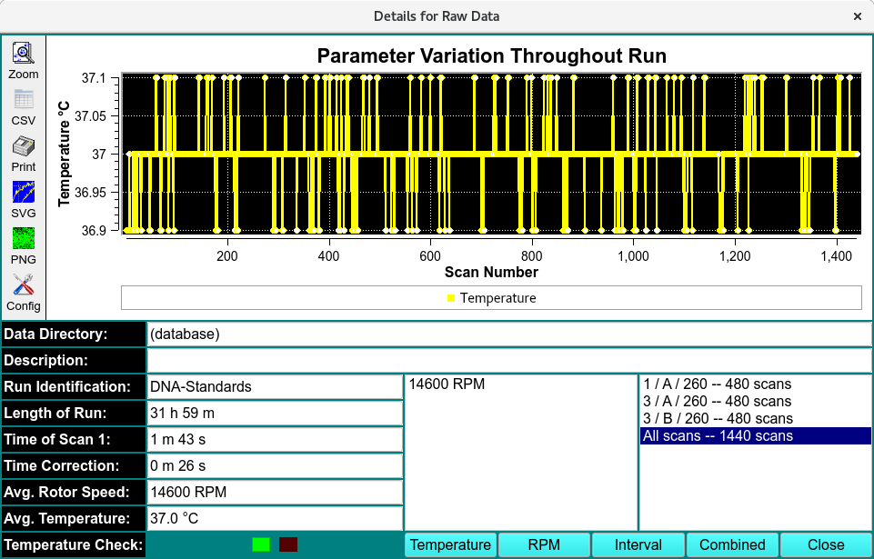

Run Detail of Raw Data¶
As raw data is collected, the temperature (°C), rotor speed (RPM), and time interval between scans (min) are recorded. The Run Details module enables users to view variations in temperature, rotor speed, and scan intervals-both for individual triplicate scans and across the entire run.

Details for Raw Data
Temperature
RPM
Interval
Combined
Run Details
Paramater Variation Throughout Run |
Plot window to view the variations in temperature, speed, scan time interval and all combined. |
Data Directory: |
Name of data directory if local. |
Description: |
Run label or selected triplicate identification. |
Run Indentification: |
Run label |
Length of Run: |
Total scan time of run. |
Time of Scan 1: |
Time of scan 1 after protocol specificed rotor speed and temperature are reached. |
Time Correction: |
Scan time corrections |
Avg. Rotor Speed: |
average rotor speed across the total run time |
Avg. Temperature: |
average temperate across the total run time |
Speed text box |
average rotor speed |
triplicate and number of scans - used for Scan Number in plot |